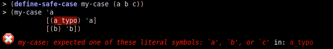

8.6
safe-case
License: MIT or Apache 2.0 at your option.
define-safe-case is for those who like case but fear uncaught typos.
Examples:
> (define-safe-case my-case (a b c)) ; Works just like case:
> (my-case 'b [(a) 'a] [(b c) 'b-or-c]) 'b-or-c
; Compile-time error: ; (The docs don't render this well, see below for a DrRacket screenshot)
> (my-case 'a [(a_typo) 'a] [(b) 'b]) eval:3:0: my-case: expected one of these literal symbols:
`a', `b', or `c'
at: a_typo
in: (my-case (quote a) ((a_typo) (quote a)) ((b) (quote
b)))
; Runtime error:
> (my-case 'a_typo [(a) 'a] [(b) 'b]) my-case: Invalid case for my-case: a_typo
valid cases: (a b c)
; Valid argument, but not included in the list:
> (my-case 'c [(a) 'a] [(b) 'b]) my-case: Unknown case for my-case: c
Example of a compilation error within DrRacket: 
syntax
(define-safe-case caser (sym ...))
Binds caser to a form similar to case but with tighter safety checks
to minimize the risk of uncaught typos.
syntax
(define-safe-case+symbols caser symbols (sym ...))
Like define-safe-case but also binds symbols to
the list of symbols.
Examples:
> (define-safe-case+symbols my-safe-case my-symbols (a b c))
> (my-safe-case 'a [(a) (list 'my-symbols: my-symbols)]) '(my-symbols: (a b c))
This form combines well in particular with define-global:category, from the global package, to read arguments from the command line.